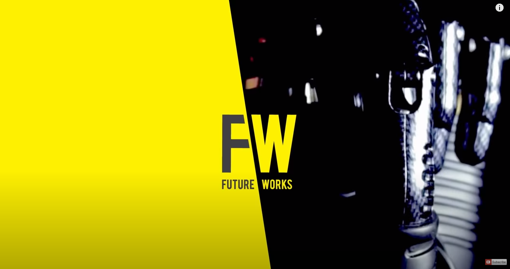

Text
2021-06-03T09:25:09+00:00
The Economist film
经济学人视频
經濟學人視頻
Body Builders - part 1
身体构建者 #1
身體構建者 #1
Bionics is moving from sci-fi fantasy to the commercial market. In BODY BUILDERS we reveal the groundbreaking technology driving the new bionic industry.
仿生学正从科幻创意变为一个商业化的市场。在《身体构建者》中，一起看看驱动仿生产业的突破性技术。
仿生學正從科幻創意變為一個商業化的市場。在《身體構建者》中，一起看看驅動仿生產業的突破性技術。
